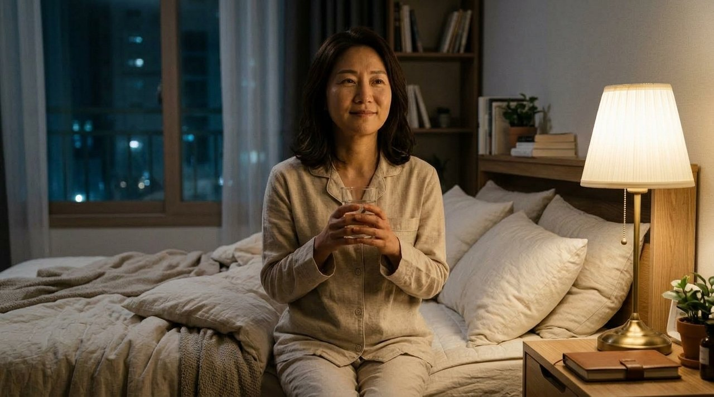
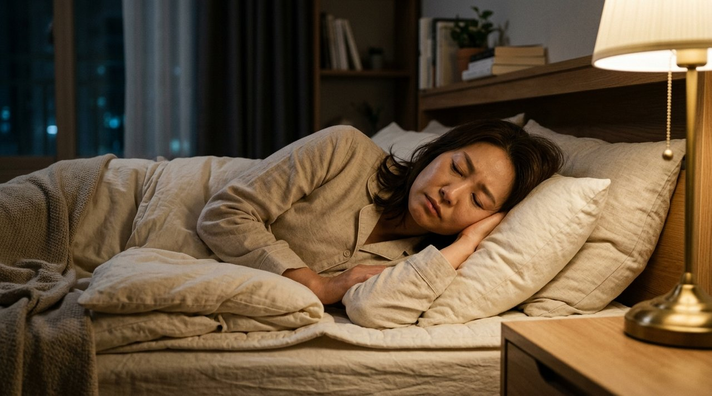
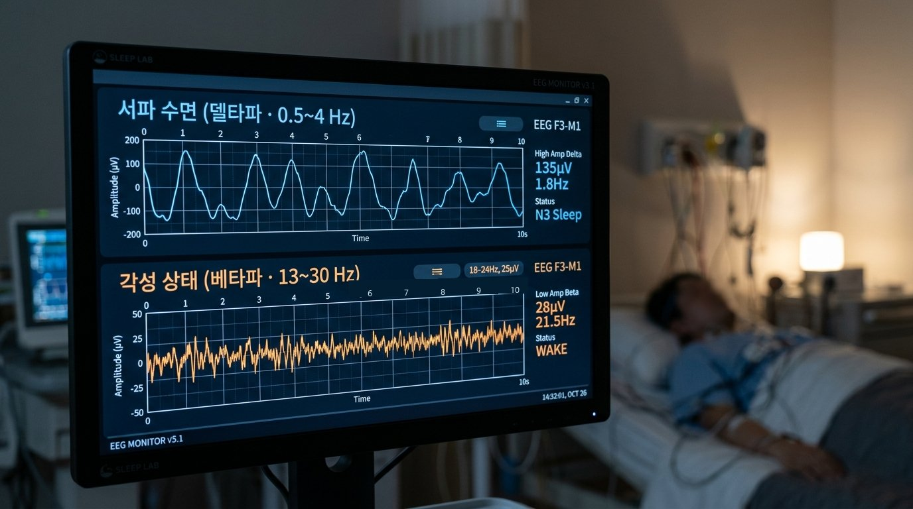
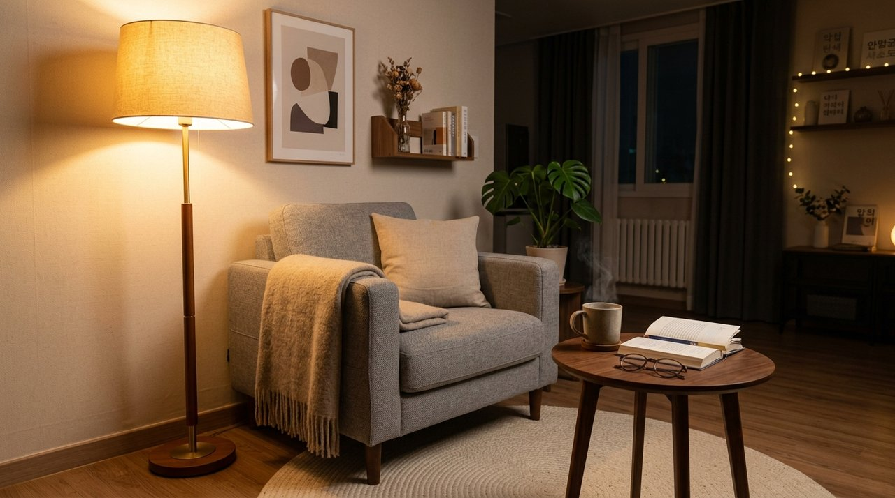
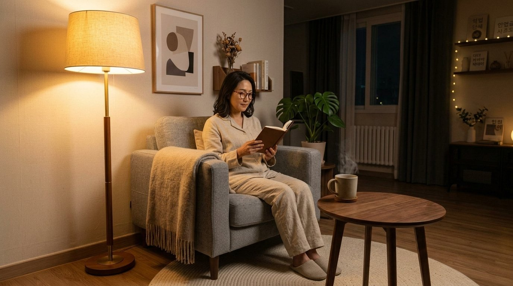
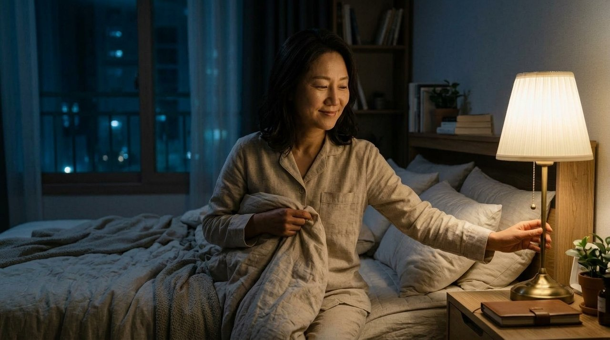

밤에 잠이 안 와서 뒤척이다가
스마트폰도 꾹 참고 눈만 감고 계신 적 있으시죠?
"잠은 안 와도 눈만 감고 누워있으면
몸과 뇌 피로는 절반은 풀린다더라"라며 위안 삼으셨을 겁니다.
하지만 미국수면의학회 연구에 따르면
눈만 감고 깨어있을 때 뇌파는 전혀 쉬지 못합니다!
근육은 누워있으니 쉴지 몰라도
뇌는 여전히 각성 상태인 베타파를 뿜어내고 있거든요.
오히려 침대에 누워 20분 넘게 버티면
뇌가 침대를 '고민하고 각성하는 전쟁터'로 오해하기 시작합니다.

하버드 의과대학 수면 연구팀의 임상 데이터를 보면
진짜 뇌가 노폐물을 청소하고 회복하는 순간은 따로 있습니다.
깊은 잠에 빠졌을 때만 나타나는 서파 수면(델타파) 단계에서만
뇌 척수액이 뇌 속 독소 단백질을 씻어내기 때문입니다.
눈만 감고 잡념에 빠져있는 상태는
뇌 겉면이 팽팽하게 긴장해 있는 얕은 휴식에 불과합니다.
"누워만 있어도 피로가 풀린다"는 말만 믿고 새벽 2시까지 버티면
다음 날 아침 머리가 돌덩이처럼 무겁고 두통이 찾아오는 이유입니다.

대한수면연구학회 표준 지침에서 가장 강조하는 절대 원칙이
바로 '침대 20분 자극 분리 수칙'입니다.
잠자리에 누운 지 20분 이상 지났는데도 잠이 안 오면
미련 없이 이불을 박차고 침실 밖으로 나가야 합니다.

침대에서 시계를 보며 "왜 안 오지?" 안달할수록
뇌는 '침대 = 잠자는 곳'이 아니라 '침대 = 고민하는 곳'으로 세팅됩니다.
거실로 나와 은은한 주황색 조명 아래서
가벼운 책을 읽거나 잔잔한 음악을 들으며 긴장을 풀어보세요.

스마트폰이나 TV는 절대 켜지 마시고
눈꺼풀이 스르륵 무거워지는 신호가 올 때 비로소 다시 침대로 돌아가는 겁니다.
잠에 쉽게 들기 위한 인체의 비밀 열쇠는
몸속 중심 온도인 '심부체온'의 하강에 달려 있습니다.
자기 직전에 뜨거운 물로 샤워하면 체온이 치솟아 잠을 깨우니
반드시 취침 90분 전에 38~40℃ 미온수로 씻어야 합니다.
손발 말초 혈관이 열리면서 체내 열이 방출되고
90분 뒤 심부체온이 1도 떨어지면서 강력한 입면 졸음이 쏟아집니다.
여기에 신경 진정에 도움을 주는 마그네슘을 섭취하고 싶다면
자기 직전 공복보다 취침 1시간 전 미온수 한 잔과 함께 드시는 것이 안전합니다.

오늘 밤부터는 잠이 안 온다고 침대 위에서 끙끙 앓지 마세요.
20분 동안 잠이 안 오면 가볍게 일어나 거실 공기를 마시고
몸이 진짜 잠들 준비를 마쳤을 때 침대에 눕는 것이 지혜로운 숙면 습관입니다.
여러분은 평소 잠이 안 올 때 침대에서 억지로 눈 감고 버티시는 편인가요?
아니면 침대 밖으로 나와 잠깐 다른 일을 하시는 편인가요? 댓글로 편하게 경험을 나눠주세요 😊